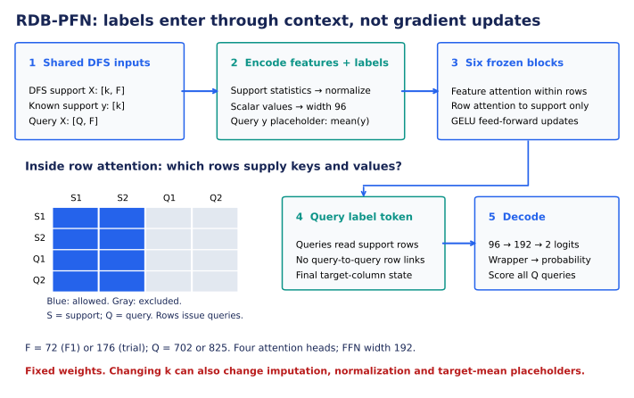
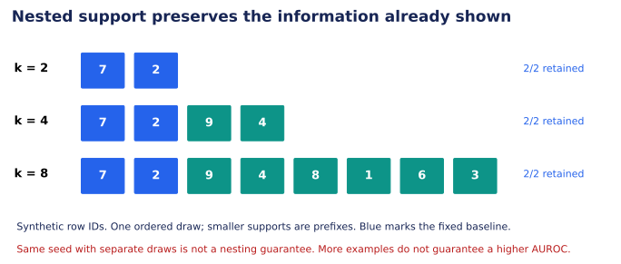
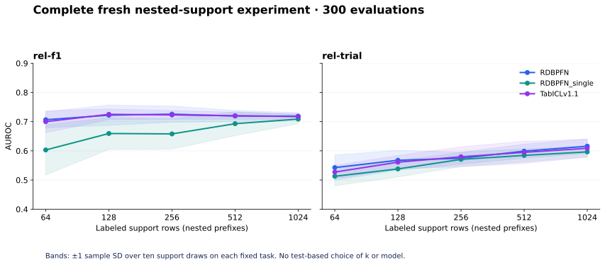

Year5 · Quarter2 · Lesson176
Few-shot ICL evaluation
One win: design and audit a few-shot evaluation in which increasing the label budget preserves the examples already shown. About 20 minutes; the notebook is a separate practice session.
174: change parameters → 175: audit information access → 176: vary labeled context → 177: account for compute.
1 · A frozen model can still learn from examples¶
Lesson 174 adapted model parameters. Lesson 175 froze them, then found that the original RT sampler violated its declared event-time bound. That experiment stopped before model inference. Freezing weights did not make its inputs safe.
Now make permitted labeled context explicit. A support set contains examples with known answers. A query set contains the cases whose answers the model must predict. In-context learning (ICL) changes predictions by changing the support input while leaving pretrained parameters fixed. “Zero gradient updates” therefore does not mean “zero labels.” RDB-PFN §6.1 and Appendix A.3.
We return to RDB-PFN's released DFS pipeline from lessons 166–169. Deep Feature Synthesis (DFS) turns relational neighborhoods into typed aggregate features. This is a separate pipeline from RT; its results do not repair lesson 175's failure. The selected tasks are F1 driver-DNF and trial study-outcome, with all 702 and 825 test queries respectively.
Here (k) means total labeled support rows per task, shared by all queries. It is not (k) per class, per query, or per database table. All five support sizes—64, 128, 256, 512, 1,024—are called few-shot in the source protocol. No (k=0) result is implied.
2 · Follow one support label through the model¶
Read the shapes. k is the number of support examples, F the number of features, and Q the number of queries. Thus [k,F] is a table with k rows and F columns. An attention operation mixes representations from allowed positions; its mask blocks the other positions. In the diagram, “keys and values” are attention's matching and content vectors, not database primary and foreign keys. GELU is the smooth nonlinear activation inside the feed-forward update; FFN abbreviates that feed-forward network.


The RDB-PFN arms receive X_support[k,F], y_support[k], and X_query[Q,F]: F1 has 72 features; trial has 176. The original feature encoder normalizes using support statistics, clips standardized values, and projects each scalar to width 96. A target column carries support labels; query target placeholders use the support-label mean, not the hidden query answer. Released model.
Six blocks alternate attention across columns within a row and attention across rows within a column. During row attention, support rows attend to support rows; query rows attend to support rows. The query label token then goes through a 96 → 192 → 2 decoder. The wrapper produces class probabilities. Both RDB-PFN checkpoints use this architecture, but their pretraining priors differ. TabICL v1.1 is a separate 32-estimator comparator on the same DFS inputs; this diagram does not describe its architecture.
The wrapper's fit(X_support, y_support) installs context. It does not run target-task gradient descent. Adding support can change label evidence and support-fitted preprocessing. Our estimand—the quantity we intend to measure—is the complete frozen inference pipeline's response to more labeled context. It is not a pure causal estimate of label count with every intermediate representation held fixed.
3 · Keep old examples when adding new ones¶
Lesson 169 reproduced the released sampler: each size used its own random draw without replacement. Reusing a seed did not make those sets nested. A 128-example result could replace many of the 64 examples, mixing a size change with a composition change.
For the new L176 Nested-Support ICL Evaluation, draw an ordered set of 1,024 eligible training rows once per task and seed. Use its prefixes at every smaller size. At any size, all three models receive exactly the same ordered support identities.


A tiny synthetic trace makes the distinction visible. Suppose the ordered draw is [7,2,9,4,8,1,6,3]. At (k=2), use [7,2]; at (k=4), use [7,2,9,4]. Both old examples remain. An independent draw [8,1,7,6] retains only one. These toy identifiers explain sampling; they are not measured benchmark rows.
def nested_support(n_rows, contexts, seed_key):
import hashlib
import numpy as np
if type(n_rows) is not int or not contexts or any(type(k) is not int or not 0<k<=n_rows for k in contexts) or len(set(contexts))!=len(contexts) or not isinstance(seed_key,str) or not seed_key:
raise ValueError('Invalid support request')
seed=int.from_bytes(hashlib.sha256(seed_key.encode()).digest()[:4],'big')
largest=np.random.default_rng(seed).choice(n_rows,max(contexts),replace=False)
return {k:largest[:k].copy() for k in contexts}
Each prefix remains a random subset of the requested size, but the dependence between sizes changes. That change is declared before inference. Larger contexts can still hurt: additional examples can be misleading, preprocessing can shift, and a model's response need not be monotonic.
4 · Freeze the evaluation contract before seeing scores¶
| Decision | Frozen choice |
|---|---|
| Queries | Every released F1/trial test key; no row cap |
| Support candidates | Released training split only; no query answers |
| Size and seeds | Five fixed sizes × seeds 0–9 |
| Models | Two pinned RDB-PFN checkpoints; pinned TabICL v1.1 |
| Fairness | Same ordered support and query keys across models |
| Selection | No test-based choice of model, seed, size, or checkpoint |
| Metric | AUROC per run, then means and sample SD across support draws |
Use complete (entity_id, cutoff) keys. An entity may appear at multiple dates; collapsing those rows can silently overwrite answers. Check unique support identities, support/query disjointness, and completed outcome windows before dispatch. The conservative inherited horizon checks are 60 days for the released F1 data and 365 for trial; these are retained compatibility checks, not a new claim about RT's 30-day task implementation. Input preflight, original F1 protocol.
The released binary labels complement the raw task labels; preserve their orientation consistently for both targets and probabilities. Existing MAX-timestamp checks cover selected DFS columns. Complete DFS regeneration, historical feature arrival, exact pretraining lineage, and historical identity remain unestablished. Successful support checks alone cannot establish every feature's legality.
5 · Pair gains by support draw¶
For seed (s), compute Δ_s = AUROC(2k,s) − AUROC(k,s). Average these ten differences and report their sample standard deviation. Pairing by seed preserves the nested experiment's design. Do not subtract unmatched rows after sorting scores.
For a synthetic three-seed trace, scores [.60,.70,.80] at (k) and [.65,.68,.83] at (2k) give gains [+.05,−.02,+.03]: mean +.02, sample SD .0361. The average improves even though one seed gets worse. This is an arithmetic example, not our measured result.
These seeds vary support draws on a fixed task. They are not ten independent databases. A sample SD is not a confidence interval or evidence of universal superiority. We show all five sizes without selecting the highest test score as a new tuned configuration.
| Task / frozen model | 64 | 128 | 256 | 512 | 1,024 |
|---|---|---|---|---|---|
| rel-f1/RDBPFN | 0.7066 | 0.7220 | 0.7256 | 0.7192 | 0.7188 |
| rel-f1/RDBPFN_single | 0.6030 | 0.6593 | 0.6579 | 0.6929 | 0.7086 |
| rel-f1/TabICLv1.1 | 0.6999 | 0.7250 | 0.7229 | 0.7202 | 0.7173 |
| rel-trial/RDBPFN | 0.5426 | 0.5677 | 0.5746 | 0.5988 | 0.6159 |
| rel-trial/RDBPFN_single | 0.5127 | 0.5380 | 0.5707 | 0.5843 | 0.5963 |
| rel-trial/TabICLv1.1 | 0.5272 | 0.5610 | 0.5797 | 0.5947 | 0.6087 |
Measured mean AUROC over ten support seeds; every cell contains fresh L176 inference. Sample SD and all paired gains are in the notebook and explorer.


Observed negative mean doubling gains: rel-f1/RDBPFN: 256→512 (-0.00634); rel-f1/RDBPFN: 512→1024 (-0.00048); rel-f1/RDBPFN_single: 128→256 (-0.00138); rel-f1/TabICLv1.1: 128→256 (-0.00208); rel-f1/TabICLv1.1: 256→512 (-0.00276); rel-f1/TabICLv1.1: 512→1024 (-0.00284). 21 of 24 adjacent-size contrasts contain both positive and negative seed gains. These observations describe two fixed tasks and do not establish a universal effect.
The explorer uses the actual per-seed records. Its fixed baseline is (k=64); it shows the difference for the same seed and the retained support count. Change the seed as well as the size before explaining the curve.
6 · Keep reproduction and intervention separate¶
Track A: published-experiment replay. Independently authenticate and rescore lesson 169's full 300 selected evaluations: 229,050 saved probabilities. Its original independent support draws and source comparisons remain intact. This is fresh verification of saved evidence, not fresh inference.
Track B: nested-support experiment. Execute the complete new 300-evaluation grid and save keyed probabilities, support identities, source hashes, and attempt receipts. Nested sampling is a declared deviation from the released implementation. Agreement at 1,024 examples is a consistency check, not permission to call the smaller nested contexts a paper-table reproduction. Full contract.
Executed: all 300 fresh nested evaluations and all 300 saved published-protocol evaluations independently rescored: 458,100 probabilities across the two tracks. These are repeated predictions on the same two test populations, not 458,100 independent examples. Fresh pretraining and whole-paper reproduction remain NOT_RUN; learner status is PENDING_WRITTEN_DEFENSE.
Neither track reproduces the whole paper or fresh pretraining. The inherited TabICL exact-repeatability failure remains visible; small numerical discrepancies are not silently relabeled as exact equality. The aggregate cost cap is $10, including failures and overhead. A budget or scientific failure stops execution and yields INCOMPLETE, rather than a smaller experiment under the same name.
7 · Lab: build the support contract, then defend the curve¶
Prepared notebook · Student notebook · Reference solution · Quick reference.
Complete three live functions: construct nested support, score by complete query keys, and require a complete seed grid before computing paired gains. Checks reject plausible wrong implementations. The portable notebook replays every saved prediction using your functions. Its appendices expose the original model and the full fresh-inference runner; the default does not launch paid work.
Exit: choose one observed negative gain or a seed reversal. State the task, model, sizes and seed evidence; explain what changed, what stayed fixed, and why the result neither proves nor disproves a universal benefit from more labels. Add the source/availability limitation that your claim still depends on.
Read RDB-PFN Appendix A.3, then trace its released sampler beside the nested implementation. Ask the agent follow-up questions or paste your evaluation card for feedback. Author execution does not establish learner mastery.